| |
Pole Position Review
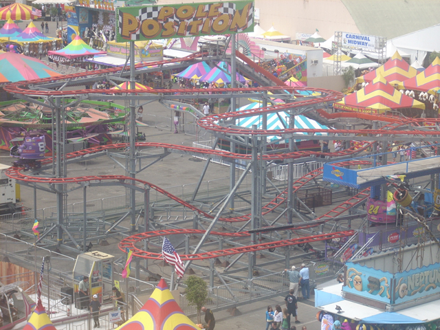
Once you get in the seat, the carny pulls down your lap bar and away you go. you climb up the first lifthill and then you go through a turn into the 2nd Part of the lifthill. It almost feels like you are a peep on RCT1 with the double lift hill and crapiness of the ride. Of course, If I was an RCT1 peep, I would've walked away saying "I want to go on something more thrilling than Pole Position." Anyways, after the 2nd part of the lifthill, you go through some straight track before making your first turn. Then you go through the first turn, where your car finally starts to spin a little, then it's more straight track until the next turn. This part of the ride is like a Wild Mouse, exept for the fact that it's not fun. After the third switchback, there's a trim brake because god knows that Pole Position can not be a fun ride. After that, there is a turn which is followed by an itty bitty dip. Then you inch down as you go through another turn around and some pretty harsh trim brakes that kill any potential joy the ride holds. But now it's time for the BIG SCARY DROP!!!! The drop is slightly fun as you are on your side. But it makes up for that little bit of fun by violently slamming through another turn around. And it's not fun like on a Wild Mouse. Then you go through straight track and another turnaround actually spinning at a decent pace. However, Pole Position must end all fun immedietly as the ride comes to an end. Though, at the Santa Barbara Fair, the trims were not running, so it was actually pretty fun. But still, this is a sh*tty coaster that I'd recommend skipping If you've been on it before and has a long line (It usually does).
5/10
Location: American Fairs
Opened: Unknown
Built by: Fabbri
Last Ridden: May 2, 2010
I have ridden this exact same ride at the following parks.
Castle Park
Power Park
Pole Position Photos (Santa Barbara Fair)
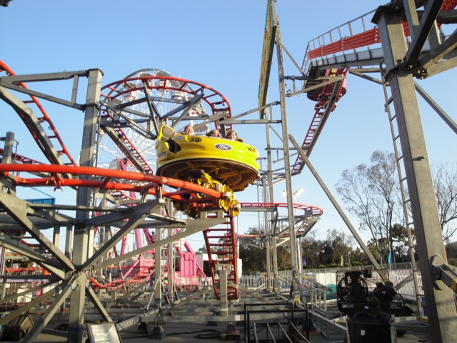
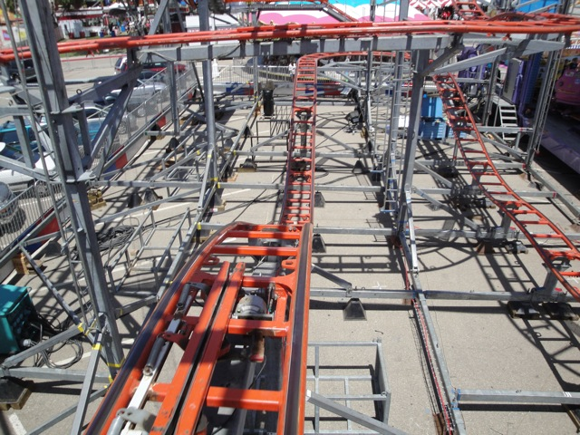
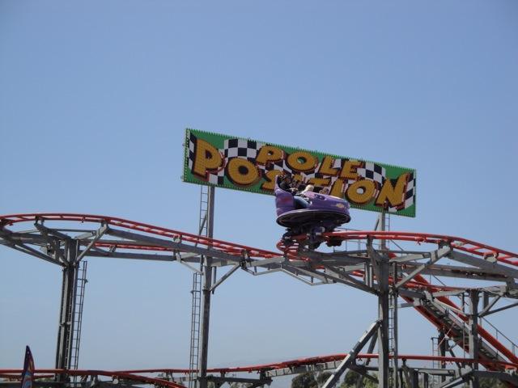
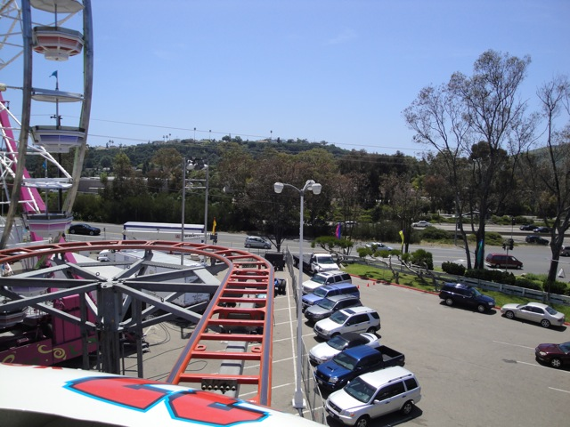
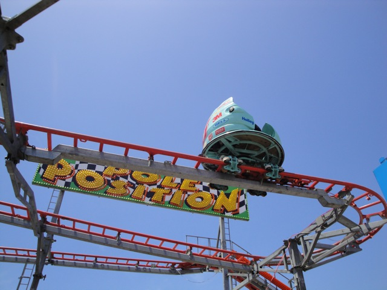

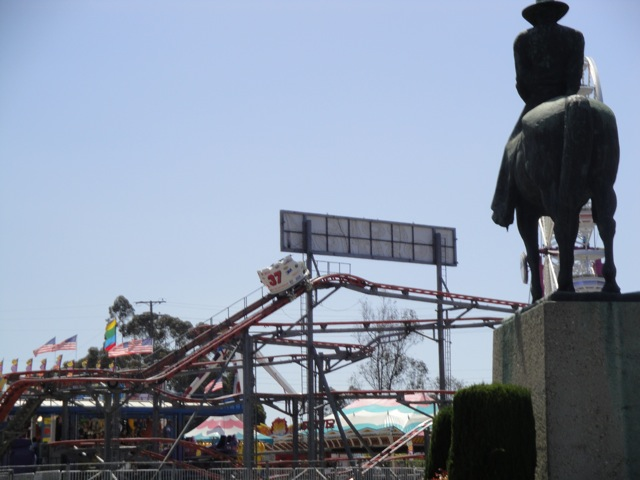
Pole Position Photos (Ventura County Fair)

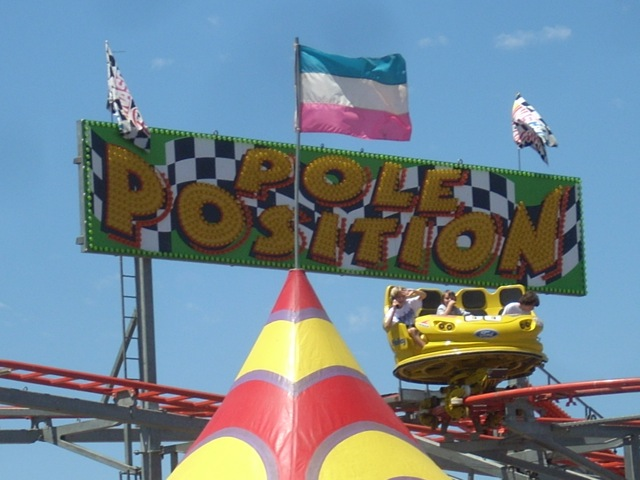
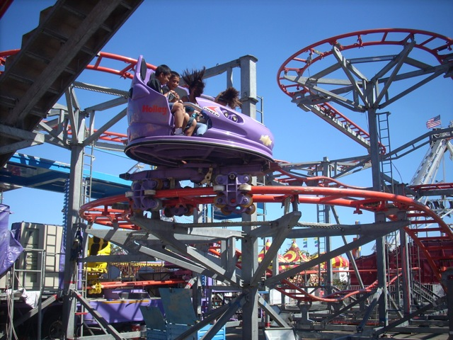
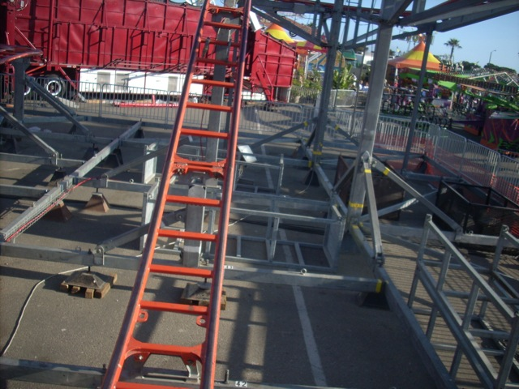
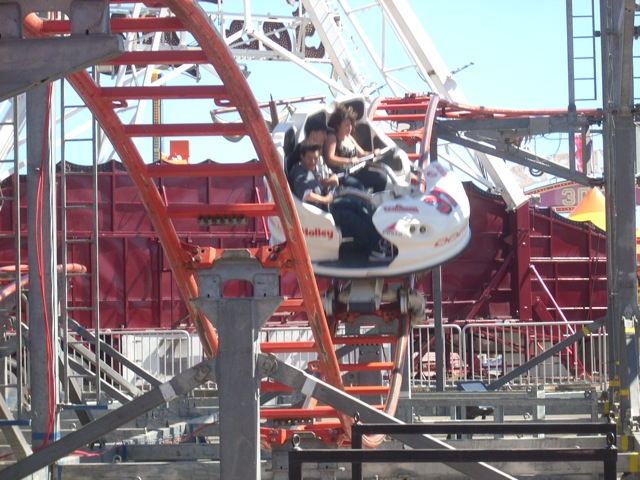
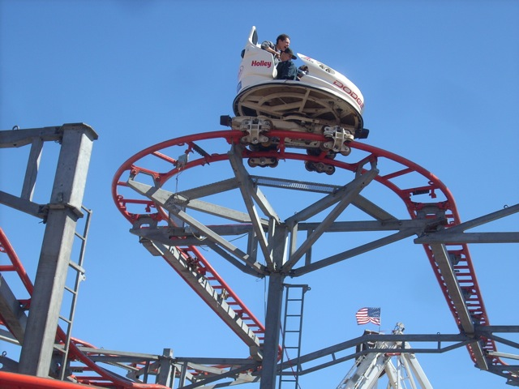
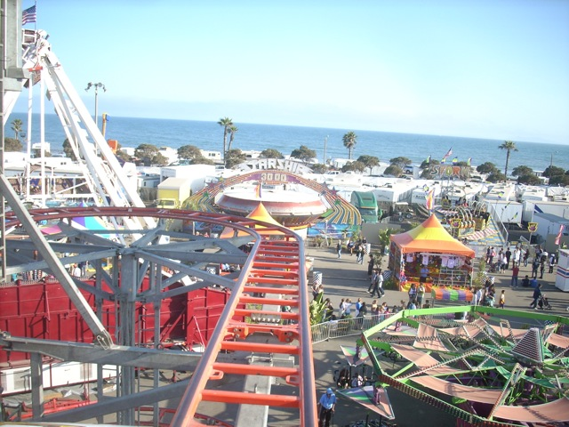
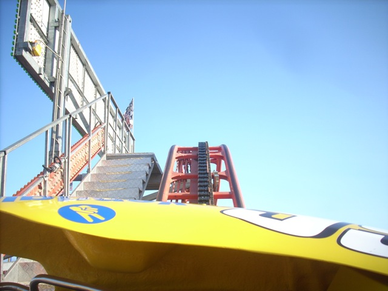
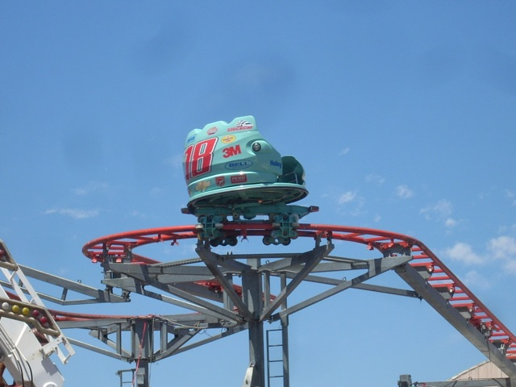
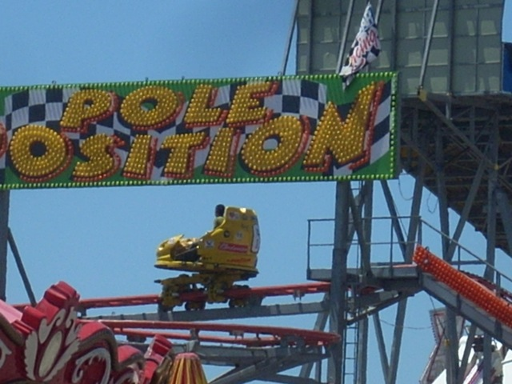
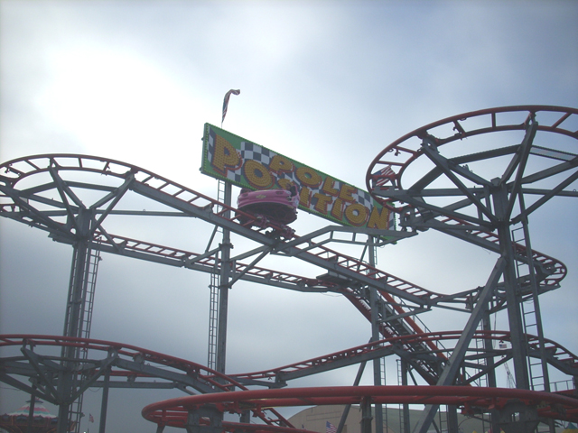
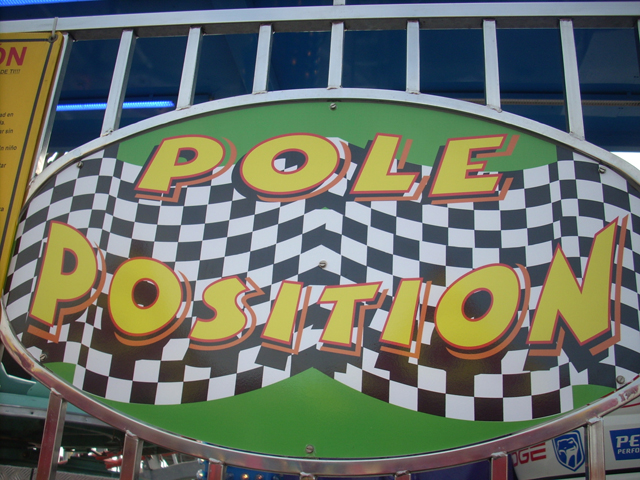
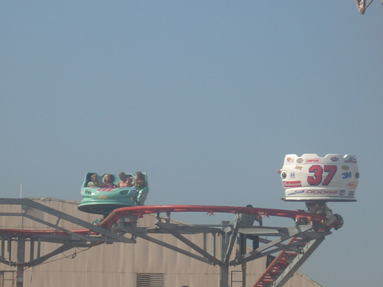
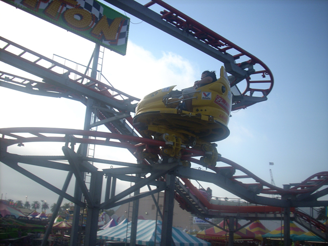
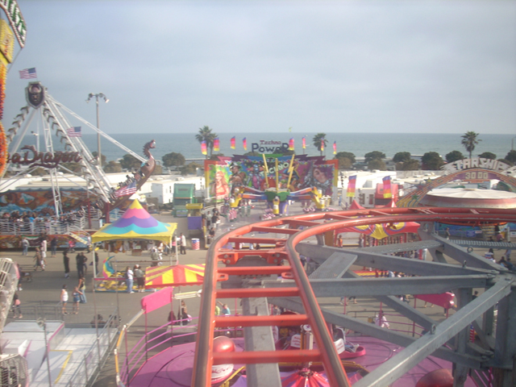
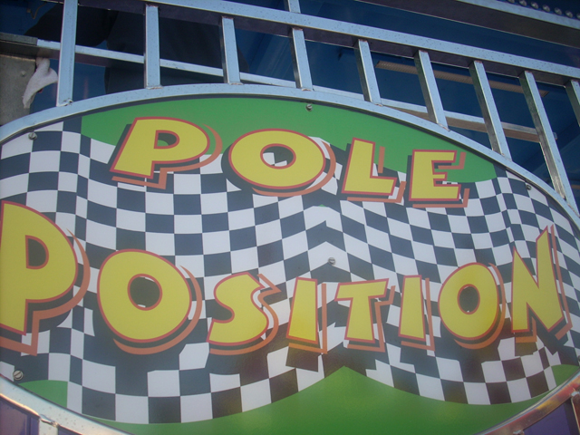
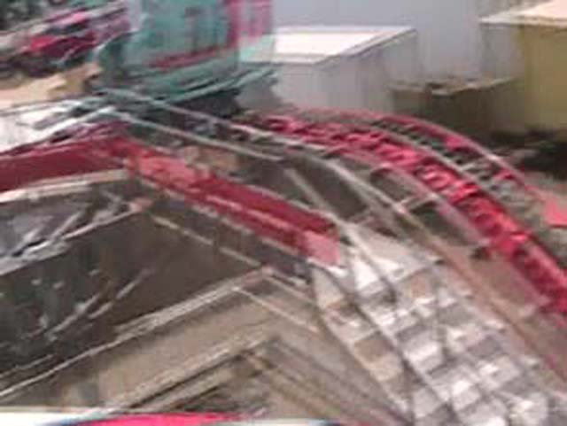
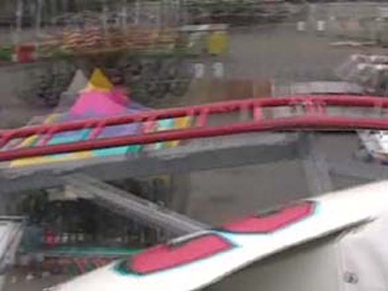
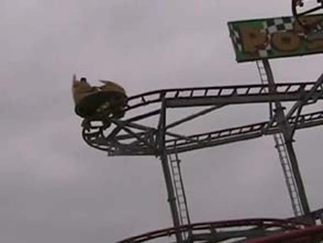
Home
|